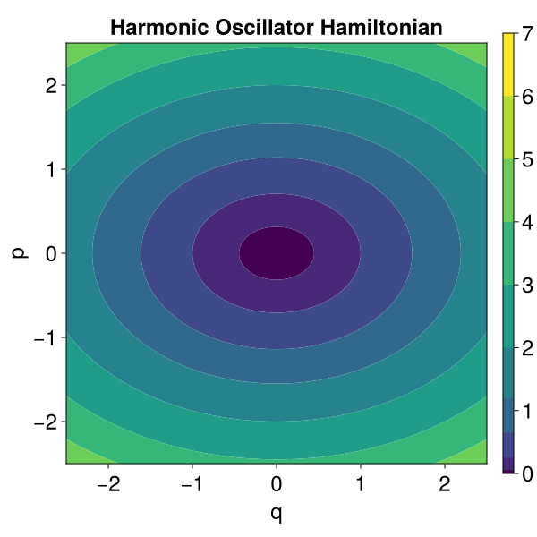

Harmonic Oscillator
The equations of motion of a harmonic Oscillator with spring constant $k$ and mass $m$ are given by
\[m \, \ddot{x} (t) = - k \, x (t) , \qquad x(t_0) = x_0 , \qquad \dot{x} (t_0) = \dot{x}_0 .\]
Its solution is obtained as
\[x (t) = A \, \cos( \omega (t - t_0) - \varphi )\]
with the frequency $\omega = \sqrt{k / m}$, amplitude $A = x_0 \, \sqrt{1 + \dot{x}_0^2 / (m k x_0^2)}$, and phase $\varphi = \arctan(\dot{x}_0 / (m \omega x_0))$. The energy of the system is
\[E(x, \dot{x}) = \frac{m}{2} \dot{x}^2 + \frac{k}{2} x^2 .\]
Hamiltonian Formulation
In canonical Hamiltonian coordinates $(q = x, \, p = m \dot{x})$, the Hamiltonian of the harmonic oscillator is given by
\[H(q, p) = \frac{1}{2m} p^2 + \frac{k}{2} q^2 ,\]
such that Hamilton's equations of motion read
\[\dot{q} = \frac{\partial H}{\partial p}(q, p) = \frac{p}{m} , \qquad \dot{p} = - \frac{\partial H}{\partial q}(q, p) = - k q , \qquad q(t_0) = q_0 , \qquad p(t_0) = p_0 .\]
and their solution is given by
\[q (t) = A \, \cos( \omega (t - t_0) - \varphi ) , \qquad p (t) = - \omega A \, \sin( \omega (t - t_0) - \varphi ) ,\]
with
\[A = q_0 \, \sqrt{1 + p_0^2 / (k q_0^2)} , \qquad \varphi = \arctan(p_0 / (\omega q_0)) .\]
